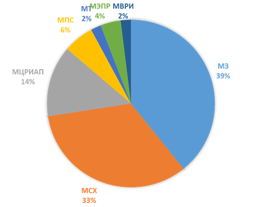
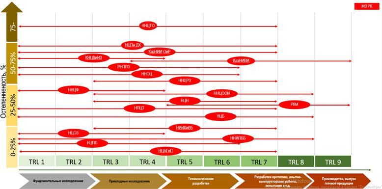
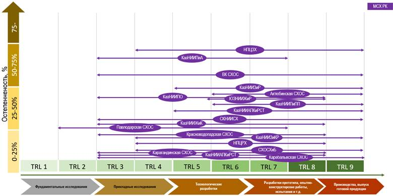
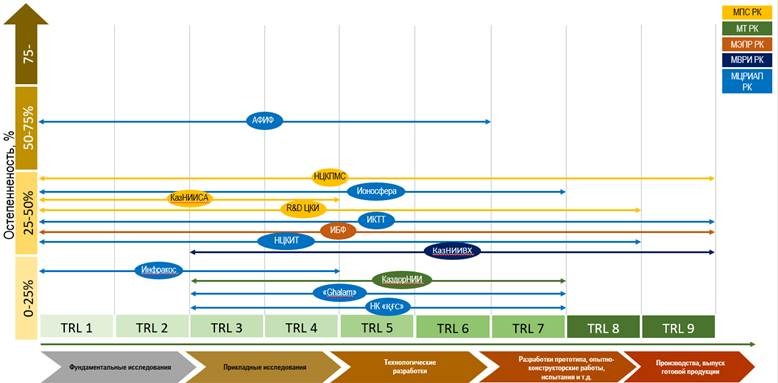
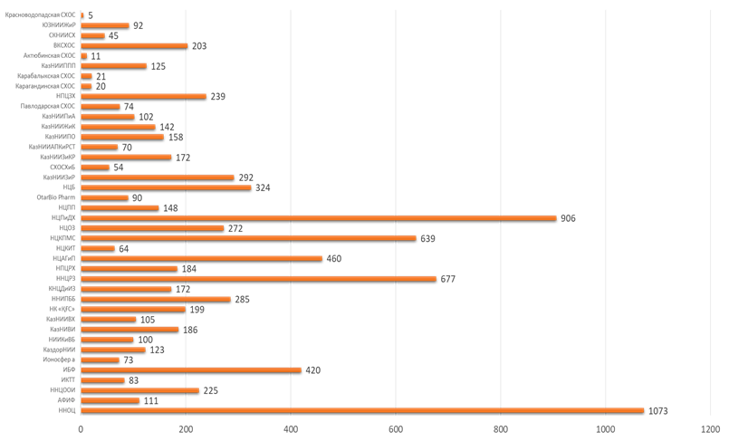
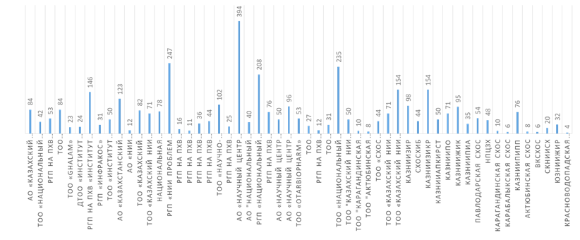
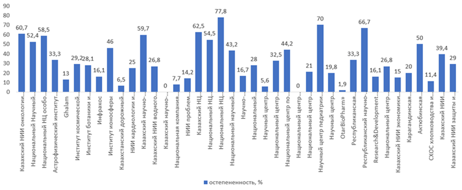
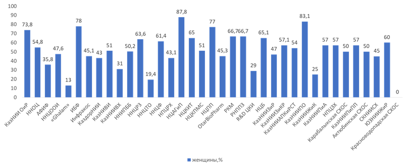
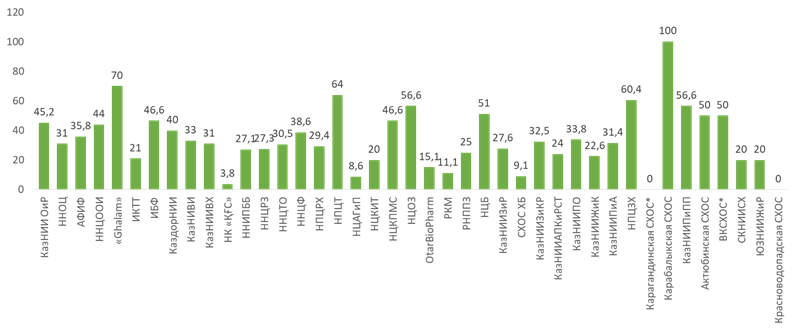
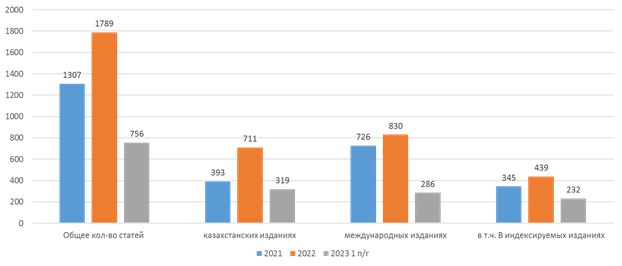

Национальная академия наук Республики Казахстан при Президенте Республики Казахстан в целях изучения научного потенциала научных организаций провела анализ полученной информации от подведомственных научных организаций отраслевых государственных органов, включая дочерние и структурные институты организаций высшего и послевузовского образования (МНВО РК, МЦРИАП РК, МЗ РК, МСХ РК, МЭПР РК, МЭ РК, МИИР РК и др.).
Цель исследования – оценить:
- кадровый потенциал научных учреждений;
- актуальность и перспективность научных исследований;
- результативность научно-технической деятельности (НТД);
- коммерциализацию результатов исследований и разработок;
- вхождение в рейтинги экспертных центров;
- деятельность НИИ и НЦ, проведенную уполномоченным органом в сфере науки.
Развитие науки является одним из стратегических приоритетов для обеспечения национальной безопасности и достижения нового качества научно-технологического и экономического развития страны.
Для проведения анализа были представлены аннотационные отчеты от 51 научной организации (приложение 1.5.1).
Анализ показал, что научные организации:
- обладают необходимым кадровым и научным потенциалом;
- руководствуются актуальными и перспективными приоритетными направлениями научных исследований, которые соответствуют основным приоритетным направлениям науки, определенным ВНТК при Правительстве РК;
- добиваются результативности научно-технической деятельности, о чем свидетельствуют публикации, индексируемые в авторитетных зарубежных ресурсах и отечественных журналах, а также монографии, учебники, учебные пособия;
- осуществляют коммерциализацию результатов исследований и разработок.
База данных включает 51 организацию, которые принадлежат к 7 министерствам. Наибольшая их часть находится в ведении Министерства здравоохранения – 20, Министерства сельского хозяйства – 17. К Министерству цифрового развития, инноваций и аэрокосмической промышленности относятся 7 организаций, Министерству промышленности и строительства – 3, Министерству экологии и природных ресурсов – 2, Министерству транспорта – 1, Министерству водных ресурсов и ирригации – 1 организация (Рис. 1.5.1).

Рисунок 1.5.1 Принадлежность научных организаций по министерствам
Анализ показывает, что наиболее высокая остепененность в научных организациях Министерства промышленности и строительства (3 организации) – 40,6%, Министерства сельского хозяйства (17) – 38,1%.
В научных организациях Министерства здравоохранения (20) остепененность составила 28,6%, Министерства водных ресурсов и ирригации (1) – 26,8%%, Министерства цифрового развития, инноваций и аэрокосмической промышленности (7) – 25,7%, Министерства экологии и природных ресурсов (2) – 23,4%.
Самая низкая остепененность по Министерству транспорта (1) – 6,5%.
Наиболее высокого уровня достигли организации МСХ РК. Из 17 организаций 8 достигли TRL-9, 6 - TRL-8 и 1 - TRL-7.
По Министерству здравоохранения: TRL-9 – 2; TRL-8 – 3; TRL-7 – 7; TRL-6 – 3; TRL-4 – 3 организации.
Министерство цифрового развития, инноваций и аэрокосмической промышленности: TRL-9 – 1; TRL-8 – 1; TRL-7 – 3; TRL-6 – 1; TRL-5 – 1 организация.
Министерство промышленности и строительства: TRL-9 – 1, TRL-8 – 1 организация.
Министерство экологии и природных ресурсов: TRL-9 – 2 организации.
Министерство водных ресурсов и ирригации: TRL-9 – 1 организация.
Министерство транспорта: TRL-7 – 1 организация.
Министерство здравоохранения:

Уровень TRL-9 – КазНИВИ, РКМ
TRL-8 – ННИПББ, НЦБ, ННЦООИ
TRL-7 – ННЦТО, ННЦРЗ, НПЦТ, НИИКиВБ, НЦАГиП, НЦПиДХ, КазНИИОиР
TRL-6 – ННОЦ, РНППЗ, НЦПП
TRL-4 ННЦФ, НЦОЗ, КНЦДиЗ
Наиболее высокая остепененность в РГП на ПХВ «Национальный научный центр травматологии и ортопедии имени академика Батпенова Н.Д.» - 77,8%.
В АО «Научный центр педиатрии и детской хирургии» - 70%, РГП на ПХВ «Республиканский научно-практический центр психического здоровья» - 66,7%, РГП на ПХВ «Казахский научный центр дерматологии и инфекционных заболеваний» - 62,5%, АО «Казахский научно-исследовательский институт онкологии и радиологии» - 60,7%, ТОО «Казахский научно-исследовательский ветеринарный институт» - 59,7%, РГП на ПХВ «Национальный научный центр особо опасных инфекций им. М.Айкимбаева» - 58,5%, РГП на ПХВ "Национальный научный центр развития здравоохранения имени Салидат Каирбековой" - 54,5%, ТОО «Национальный Научный Онкологический Центр» - 52,4%.
Не высокая остепененность в РГП на ПХВ «Национальный научный центр фтизиопульмонологии» - 43,2%, ТОО «Республиканская коллекция микроорганизмов» - 33,3%, РГП на ПХВ «Национальный Производственный Центр Трансфузиологии» - 28%, ТОО «Национальный центр биотехнологии» - 26,8%, АО «Научно-исследовательский институт кардиологии и внутренних болезней» - 25%
Самая низкая остепененность в РГП на ПХВ «Национальный центр общественного здравоохранения» - 21%, АО «Научный центр противоинфекционных препаратов» - 19,8%, РГП «Научно-исследовательский институт проблем биологической безопасности» - 14,2%, АО «Научный центр акушерства, гинекологии и перинатологии» - 5,6%, ТОО «OtarBioPharm» - 1,9%.
Данные по АО «Национальный центр нейрохирургии» представлены не полностью.
Министерство сельского хозяйства:

Уровень TRL-9 – НПЦЗХ, ВКСХОС, КазНИИЗиР, КазНИИППП, Актюбинская СХОС, СКНИИСХ, КазНИИЗиКР, СХОС ХиБ.
TRL-8 – КазхНИИЭАПКиРСТ, ЮЗНИИЖиР, КазНИИЖиК, Карагандинская СХОС, КазНИИПО, Красноводопадская СХОС.
TRL-7 – КазНИИПА.
Среди научных организаций МСХ самая высокая остепененность в ТОО «Казахский НИИ земледелия и растениеводства» - 55,1%, ТОО «Научно-производственный центр зернового хозяйства им. А.И. Бараева» - 54,3%, ТОО «Казахский научно-исследовательский институт почвоведения и агрохимии им.У.У. Успанова» - 54,2%, ТОО «Актюбиская сельскохозяйственная опытная станция» - 50%, ТОО «Восточно-Казахстанская сельскохозяйственная опытная станция» - 50%, ТОО «Юго-Западный научно-исследовательский институт животноводства и растениеводства - 46,9%,
В ТОО «Казахский научно-исследовательский институт плодоовощеводства остепененность составляет 39,4%, ТОО «Казахский научно-исследовательский институт животноводства и кормопроизводства» - 38,9%, ТОО «Северо-Казахстанский научно-исследовательский институт сельского хозяйства» - 35%, ТОО «Казахский научно-исследовательский институт перерабатывающей и пищевой промышленности» - 32%, ТОО «Казахский научно-исследовательский институт защиты и карантина растений имени Ж. Жиембаева» - 29%, ТОО «Красноводопадская сельскохозяйственная опытная станция» - 25%, ТОО «Карагандинская сельскохозяйственная опытная станция имени А.Ф.Христенко» - 20%.
Самая низкая остепененность в ТОО «Казахский научно-исследовательский институт экономики АПК и развития сельских территорий» - 15%, ТОО «Сельскохозяйственная опытная станция хлопководства и бахчеводства» - 11,4%.
По ТОО «Павлодарская сельскохозяйственная опытная станция» и ТОО «Карабалыкская сельскохозяйственная опытная станция» данные не представлены.

Министерство цифрового развития, инноваций и аэрокосмической промышленности:
TRL-9 – ИКТТ
TRL-8 – НЦКИТ
TRL-7 – Ионосфера, Ghalam, КазКосмос
TRL-6 – АФИФ
TRL-5 - Инфракос.
Самая высокая остепененность среди научных организаций МЦРИАП в ТОО «Институт ионосферы» - 46%, ТОО «Астрофизический институт имени В.Г. Фесенкова» - 33,3%, АО "Национальный центр космических исследований и технологий" - 32,5%, ДТОО «Институт космической техники и технологий» - 29,2%.
Самая низкая остепененность в Национальной компании «Казкосмос» - 7,7%, ТОО «Ghalam» - 13%, РГП «Инфракос» - 16,1%.
Министерство промышленности и строительства:
TRL-9 – НЦКПМС
TRL-8 – R&D ЦКИ
Самая высокая остепененность в РГП «Национальный центр по комплексной переработке минерального сырья» - 44,2%, самая низкая – в ТОО «Research&Development центр «Казахстан инжиниринг» - 16,1%.
По АО "Казахский научно-исследовательский и проектный институт строительства и архитектуры" полные данные не представлены.
Министерство экологии и природных ресурсов:
TRL-9 – ИБФ, НПЦРХ
В организациях МЭПР остепененность не высокая – в РГП на ПХВ «Институт ботаники и фитоинтродукции» - 28,1%, ТОО «Научно-производственный центр рыбного хозяйства» - 16,7%.
Министерство водных ресурсов и ирригации:
TRL-9 – КазНИИВХ
В ТОО «Казахский научно – исследовательский институт водного хозяйства» остепененность составляет 26,8%.
Министерство транспорта:
TRL-7 - КазДорНИИ
В АО «Казахстанский дорожный научно-исследовательский институт» остепененность низкая - 6,5 %.
1.5.1 Научный потенциал организаций
Кадровый потенциал, квалификация научных кадров
1. Научно-исследовательские организации обладают необходимым кадровым потенциалом для выполнения НИОКР: имеют достаточное количество докторов, кандидатов наук, докторов PhD и других научных сотрудников.
Наиболее крупными научными организациями являются: ТОО «Национальный Научный Онкологический Центр» - штатная численность составляет 1073 чел., АО «Научный центр педиатрии и детской хирургии» - 906 чел., РГП на ПХВ "Национальный научный центр развития здравоохранения имени Салидат Каирбековой" - 677 чел., РГП «Национальный центр по комплексной переработке минерального сырья Республики Казахстан» - 639 чел., АО Научный центр акушерства, гинекологии и перинатологии» - 460 чел., РГП на ПХВ «Институт ботаники и фитоинтродукции» - 420 чел., ТОО «Национальный центр биотехнологии» - 324 чел., ТОО «Казахский НИИ земледелия и растениеводства» - 292 чел., РГП на ПХВ «Научно-исследовательский институт проблем биологической безопасности» -285 чел. (рис. 1.5.2, приложение 1.5.2, 1.5.3).

Рисунок 1.5.2. Штатная численность научных организаций, чел.
Больше всего научных сотрудников работают в АО «Научный центр акушерства, гинекологии и перинатологии» (394 чел.), РГП на ПХВ «Научно-исследовательский институт проблем биологической безопасности» (247 чел.), АО ТОО «Национальный центр биотехнологии» (235 чел.), РГП «Национальный центр по комплексной переработке минерального сырья Республики Казахстан» (208 чел.) (рис. 1.5.3).

Рисунок 1.5.3. Численность научных сотрудников, чел.
Остепененность. Качественный состав представлен главными, ведущими, старшими, младшими научными сотрудниками, лаборантами.
Всего в представленных организациях работает 899 человек с учеными степенями доктора, кандидата наук, доктора PhD. Остепененность составляет 30,8% (приложение 1.5.2).
Наиболее высокая остепененность в РГП на ПХВ «Национальный научный центр травматологии и ортопедии имени академика Батпенова Н.Д.» – 77,8%, РГП на ПХВ «Республиканский научно-практический центр психического здоровья» - 66,7%, РГП на ПХВ «Казахский научный центр дерматологии и инфекционных заболеваний» – 62,5%, АО «Казахский научно-исследовательский институт онкологии и радиологии – 60,7%, ТОО «Казахский научно-исследовательский ветеринарный институт» - 59,7%, ТОО «Астрофизический институт имени В.Г. Фесенкова» - 58,5%, ТОО «Земледелия и растениеводства» - 55,1%, ТОО «Национальный Научный Онкологический Центр» - 52,4% (рис. 1.5.4).
Рисунок 1.5.4. Остепененность научных организаций, %
Самая низкая остепененность в ТОО «OtarBioPharm» (1,9%), АО «Научный центр акушерства, гинекологии и перинатологии» (5,6%), АО «Казахстанский дорожный научно-исследовательский институт» (6,5%), АО «Национальная компания «Қазақстан Ғарыш Сапары» (7,7%).
Гендерное соотношение. В научных организациях работают преимущественно женщины – 58,8%. Наибольшая численность женщин - в АО «Научный центр педиатрии и детской хирургии» (88,1%), АО «Научный центр акушерства, гинекологии и перинатологии» (87,8%), ТОО «Казахский НИИ плодоовощеводства» (83,1%), РГП на ПХВ «Национальный центр общественного здравоохранения» (78,3%), АО «Казахский научно-исследовательский институт онкологии и радиологии (73,8%) (рис. 5, приложение 1.5.2).

Рисунок 1.5.5. Гендерное соотношение, женщины, %
Наибольшее количество мужчин - в ТОО «Ghalam» (87%), РГП на ПХВ «Национальный научный центр травматологии и ортопедии имени академика Батпенова Н.Д.» (80,6%), ТОО «Research&Development центр «Казахстан инжиниринг» (71%).
Молодые ученые. Общая численность молодых ученых составляет 989 чел. или 32,8% от общего числа научных сотрудников (приложение 1.5.2).
Больше всего молодых ученых работают в ТОО «Караьалыкская СХОС» - (100%), РГП на ПХВ «Национальный Производственный Центр Трансфузиологии» (64%), ТОО «Научный центр зерного хозяйства» (60,4%), ТОО «Казахский НИИ перерабатывающей и пищевой промышленности» (56,6%), РГП на ПХВ «Национальный центр общественного здравоохранения» (56,6), ТОО «Институт ионосферы» (53,4%), ТОО «Национальный центр биотехнологии» (51%) (рис. 1.5.6).

Рисунок 1.5.6. Доля молодых ученых, %
Меньше всего - в ТОО «Карагандинская СХОС» (0%), АО «Национальная компания «Қазақстан Ғарыш Сапары» (3,8%), АО «Научный центр акушерства, гинекологии и перинатологии» (8,6%), ТОО «СХОС хлопководства и бахчеводства» (9,1%), ТОО «Республиканская коллекция микроорганизмов» (11,1%), ТОО «OtarBioPharm» (15,1%).
Кадровый потенциал первых руководителей
Возрастной состав. Возраст первых руководителей колеблется от 36 до 72 лет. В возрасте до 40 лет – 4 чел., от 40 до 49 лет – 16 чел. или 34%, от 50 до 59 лет – 17 чел. (36,2%), от 60 до 69 лет – 7 чел. (14,9%), старше 70 лет – 3 чел. (6,4%) (табл. 1.5.1).
Таблица 1.5.1. Возрастной состав первых руководителей
|
Численность первых руководителей в зависимости от возраста |
|||||||
|
35-39 |
40-44 |
45-49 |
50-54 |
55-59 |
60-64 |
65-69 |
70-74 |
|
4 |
8 |
8 |
9 |
8 |
4 |
3 |
3 |
Самыми молодыми руководителями являются и.о. председателя правления» Карабалыкская СХОС» Пугачев Р.П. – 33 года и директор ТОО «Институт ионосферы» Нуракынов С. М. - 36 лет, магистр технических наук.
Самыми старшими – председатель правления АО «Научный центр противоинфекционных препаратов» Ильин А.И., д.х.н., академик КазНАЕН - 72 года и председатель правления АО «Национальный центр нейрохирургии» Акшулаков С.К., д.м.н., академик НАН РК - 71 год и председатель правления ТОО «Восточно-Казахстанская СХОС» Томашенко А.П. – 71 год.
Из представленных руководителей организаций 77,6% - мужчины.
Остепененность. Остепененность первых руководителей составляет 76,6%, в том числе докторов наук 13 чел. (26,5%), кандидатов наук – 19 чел. (38,8), докторов PhD – 4 чел. (8,2%). 6 руководителей являются магистрами (12,2%), 7 чел. - без ученой степени (14,3%). Четыре руководителя (8,1%) являются академиками НАН РК, двое – академиками Казахстанской национальной академии естественных наук, 4 – академиками Академии сельскохозяйственных наук РК (приложение 1.5.3).
6 руководителей имеют государственные награды, 17 – нагрудные знаки, юбилейные медали и др., 11 руководителей не имеют никаких государственных наград.
Касенов М.М., Жарменов А.А., Акшулаков С.К. являются лауреатами Государственных премий в области науки и техники, Балпанов Д.С. - стипендиат Государственной Премии, присуждаемой молодым выдающимся ученым РК.
Кайдарова Д.Р. является Лауреатом независимой награды «Лидер науки», учрежденной международной компанией ThomsonReuters и Национальным центром научно-технической информации.
Руководители в зависимости от формы собственности организации назначаются приказами вышестоящих организаций или учредителями.
У некоторых срок указан в контракте - 1, 2, 3, 4 года, у некоторых договор заключен на неопределенное время (бессрочно).
Анализ показал, что молодые руководители не имеют ученых степеней (магистры или без степени), назначаются на срок 1-2 года и не имеют государственных или ведомственных наград.
Меры поощрения сотрудников
Госнаграды. За последние 3 года всего 97 ученых получили государственные награды, что составляет 1,1% от общей численности научных сотрудников. По некоторым организациям данные представлены за последние 5-10 лет, поэтому фактически эта цифра может быть ниже.
Квартиры получают не во всех организациях. Это во многом зависит от первого руководителя.
Так, в ТОО «OtarBioPharm» - обеспечены служебным жильем 70% работников (три 60-квартирных дома, построенных для работников РГП НИИПББ и Товарищества в 2021 году).
В РГП на ПХВ «Институт ботаники и фитоинтродукции» в 2018 г. по программе «Нурлы жер» 5 молодых специалистов получили квартиры, по программе «Алматы Жастар» с 2020 года получили 13 квартир, ожидается получение 3-х квартир.
ТОО «Национальный Научный Онкологический Центр» в 2009-2010 гг. получено 9 квартир.
РГП на ПХВ «Национальный научный центр фтизиопульмонологии Республики Казахстан» – 3 сотрудника получили жилье. АО «Научный центр акушерства, гинекологии и перинатологии» - 2 чел. В ТОО «Карабалыкская СХОС» - предоставляется общещитие.
Премии. Все организации выплачивают работникам премии при наличии экономии фонда оплаты труда, приуроченные к национальным, государственным, профессиональным праздникам: ко Дню Независимости РК, женщинам к 8 Марта и др.
Большая часть организаций выплачивает премии по итогам работы за квартал, бонусы за организацию, проведение и непосредственное участие в публичных мероприятиях по итогам квартала (семинары, тренинги, конференции, форумы и т.д.), вознаграждение по итогам работы за год.
Также оказываются меры поощрения сотрудникам: за научный вклад в отрасль ежегодно, приуроченные к знаменательным датам, юбилеям.
1.5.2 Актуальность и перспективность направлений научных исследований, реализуемых научной организацией
Основными научными направлениями являются приоритетные направления науки в РК:
- Рациональное использование водных ресурсов, животного и растительного мира, экология.
- Геология, добыча и переработка минерального и углеводородного сырья, новые материалы, технологии, безопасные изделия и конструкции.
- Энергетика и машиностроение.
- Информационные, коммуникационные и космические технологии.
- Научные исследования в области естественных наук.
- Наука о жизни и здоровье.
- Исследования в области образования и науки.
- Исследования в области социальных и гуманитарных наук.
- Устойчивое развитие агропромышленного комплекса и безопасность сельскохозяйственной продукции.
- Национальная безопасность и оборона.
По четырем направлениям выполняют научные проекты - АО «Казахский научно-исследовательский институт онкологии и радиологии», ТОО «Институт ионосферы», ТОО «Национальный центр биотехнологии» (приложение 1.5.5).
По трем направлениям - Научно-исследовательский институт проблем биологической безопасности, РГП на ПХВ «Институт ботаники и фитоинтродукции», РГП «Национальный центр по комплексной переработке минерального сырья Республики Казахстан».
Остальные организации выполняют проекты по 1-2 направлениям.
Научные программы. Научные проекты выполняются по ПЦФ, ГФ, Гранты по коммерциализации АО «Фонд науки», ГФ для молодых ученых по программе «Жас Ғалым», Программы Государственного задания.
Кроме того, научными организациями выполняются проекты внебюджетного планирования, совместные проекты с зарубежными организациями, многоцентровые клинические исследования, при поддержке зарубежных и отечественных спонсоров и др.
Научные организации являются как руководителями, так и соисполнителями проектов (рис. 1.5.7).

Рисунок 1.5.7. Количество выполняемых научных направлений и научных программ, ед.
Больше всего проектов в 2021-2023 годах выполняют ученые:
- ТОО «Национальный центр биотехнологии – 62 проекта, где численность научных сотрудников составляет 235 чел.,
- РГП «Национальный центр по комплексной переработке минерального сырья Республики Казахстан» - 33 проекта – 208 чел.,
- РГП на ПХВ «Национальный научный центр фтизиопульмонологии Республики Казахстан» МЗ РК – 26 проектов – 44 чел.,
- ТОО «Казахский НИИ земледелия и растениеводства» - 24 проекта – 98 чел.;
- ТОО «Казахский НИИ земледелия и растениеводства» - 24 проекта -
- ТОО «Институт ионосферы» - 23 проекта – 73 сотрудника,
- Научно-исследовательский институт проблем биологической безопасности – 18 проектов – 247 чел.,
- ТОО « Казахский НИИ животноводства и кормопроизводства» - 13 проектов – 53 чел.,
- РГП на ПХВ «Институт ботаники и фитоинтродукции» - 11 проектов – 146 чел.,
- ТОО «Казахский НИИ защиты и карантина растений» - 11 проектов, 154 чел.,
- ТОО «Астрофизический институт имени В.Г. Фесенкова» - 10 проектов – 53 чел.,
- АО "Национальный центр космических исследований и технологий" Аэрокосмического комитета МЦРИАП РК – 10 проектов – 40 чел.
АО «Казахский научно-исследовательский институт онкологии и радиологии» (76 чел.) кроме бюджетных программ (4), выполняют клинические и инициативные исследования и проекты за счет зарубежных грантодателей (18) – 84 чел.; РГП на ПХВ «Национальный центр общественного здравоохранения» МЗ РК – 1 грант и 8 – зарубежных проектов.
АО «Научный центр педиатрии и детской хирургии» (206 чел.) выполняет 3 ПЦФ, БП, ГФ и 7 международных неинтервенционных многоцентровых клинических исследований, международных интервенционных исследований, совместных научных проектов с зарубежными партнерами.
Выполняются по одному проекту в АО «Национальный центр нейрохирургии»; РГП на ПХВ «Республиканский научно-практический центр психического здоровья» МЗ РК (12 чел.); АО «Национальная Компания «Қазақстан Ғарыш Сапары» (78 чел.); ТОО «Ghalam» (23 чел.); РГП «Инфракос» (31 чел.).
Нет бюджетного финансирования (программы и гранты) в АО "Казахский научно-исследовательский и проектный институт строительства и архитектуры". Здесь 12 чел. с ученой степенью выполняют актуальные инициативные исследования по вопросам применения отечественной конструкционной стали в строительстве, динамические испытания зданий и сооружений, анализ акселерограмм реальных землетрясений, полученных инженерно-сейсмометрической службы АО «КазНИИСА», исследования по оценки сейсмического риска зданий на территории города Алматы.
Анализ показывает, что многочисленные организации выполняют больше проектов. Соответственно вовлеченность ученых в исследования здесь выше. Малочисленные организации выполняют по 1-2 проекта и во многом зависят от базового финансирования.
Только в двух организациях - ТОО «Институт ионосферы» (6) и ТОО «Национальный Научный Онкологический Центр» (1) гранты получили молодые ученые.
Ученые 10 организаций выполняют международные проекты. По договорам с организациями работает ТОО «Research&Development центр «Казахстан инжиниринг» (31 чел.). ТОО «Казахский НИИ экономики АПК и РСТ» (50 чел.) выполняет 2 проекта по 019 программе с МИО.
1.5.3 Результативность научно-технической деятельности организаций за последние 3 года
Результативность НТД оценивается публикациями, индексируемыми в авторитетных зарубежных ресурсах и в отечественных журналах, а также монографиями, учебниками, учебными пособиями. Анализ показал, что по результатам НИОКР активно публиковались научные статьи, издавались монографии и учебные пособия (приложение 1.5.6).
Публикации. Всего учеными научных организаций за 2021-2023 годы опубликовано 3852 статьи, в том числе в 2021 году – 1307, 2022 г. – 1789 и за первое полугодие 2023 г. – 756 статей. Следует отметить, что в 2022 году было опубликовано статей в 1,4 раза больше, чем в 2021 году. Это свидетельствует о росте публикационной активности.
Также увеличивается количество статей в казахстанских изданиях – в 1,8 раза, международных – в 1,1 раза соответственно. В том числе увеличивается количество статей, изданных в международных рецензируемых изданиях Web of Knowledge, Scopus, Springer – в 1,3 раза по сравнению с 2021 годом (рис. 1.5.8).

Рисунок 1.5.8. Количество публикаций за 2021-2023 годы
Наибольшее количество публикаций имеют: АО «Научный центр педиатрии и детской хирургии» (393), АО «Казахский научно-исследовательский институт онкологии и радиологии» (239), ТОО «Национальный центр биотехнологии» (168), РГП на ПХВ «Национальный научный центр травматологии и ортопедии имени академика Батпенова Н.Д.» МЗ РК (161).
Наименьшее количество публикаций в зарубежных изданиях имеют: Казахский научно-исследовательский и проектный институт строительства и архитектуры (2), ТОО «Ghalam» (6), РГП на ПХВ «Казахский научный центр дерматологии и инфекционных заболеваний» МЗ РК (8), Инфракос» Аэрокосмического комитета Министерства цифрового развития, инноваций и аэрокосмической промышленности РК (8).
Больше всего публикаций в международных рецензируемых изданиях Web of Knowledge, Scopus, Springer в ТОО «Национальный центр биотехнологии» (101), РГП «Национальный центр по комплексной переработке минерального сырья Республики Казахстан» (68), АО «Казахский научно-исследовательский институт онкологии и радиологии» (63), ТОО «Астрофизический институт имени В.Г. Фесенкова» (58), РГП «Научно-исследовательский институт проблем биологической безопасности» (54), АО «Научный центр противоинфекционных препаратов» (47), Национальный научный центр особо опасных инфекций им. М.Айкимбаева (35), АО «Национальный центр нейрохирургии» (34), АО «Научный центр педиатрии и детской хирургии» (32).
1.5.4 Цитируемость научных организаций в базе данных Web of Science, Scopus за 2021-2023 гг.
Цитируемость трудов. Высокий Индекс Хирша имеют ученые ТОО «Казахский научно-исследовательский ветеринарный институт» (21 чел. от 1 до 8), ТОО «Национальный Научный Онкологический Центр» (13 чел. от 1 до 7), АО «Научный центр акушерства, гинекологии и перинатологии» (13 чел. от 1 до 5).
Организациями были представлены разные данные, цитируемость приведена за последние 5 и более лет. Поэтому выборочно проведена проверка баз данных (Приложение 1.5.4).
Количество цитирований по базе данных Web of Science за последние 3 года составляет: ТОО «Национальный центр биотехнологии» - 183, АО «Казахский научно-исследовательский институт онкологии и радиологии» - 118, ТОО «Астрофизический институт имени В.Г. Фесенкова» - 58, РГП на ПХВ «Институт ботаники и фитоинтродукции» - 37, ТОО «Национальный Научный Онкологический Центр» - 22, ТОО «Институт ионосферы» - 19.
Количество цитирований по базе данных Scopus за последние 3 года составляет: ТОО «Астрофизический институт имени В.Г. Фесенкова» - 474, РГП на ПХВ «Институт ботаники и фитоинтродукции» - 39, ТОО «Институт ионосферы» - 28, АО «Казахский научно-исследовательский институт онкологии и радиологии» - 14.
Ниже приведены данные, представленные организациями. Цитируемость трудов организации РГП на ПХВ «Национальный научный центр особо опасных инфекций им. М.Айкимбаева»за последние 3 года составила 1570,
РГП «Национальный центр по комплексной переработке минерального сырья Республики Казахстан»: количество статей и обзоров с аффилиацией НИИ в рецензируемых научных журналах, индексируемых в международной базе данных Web of Science за 2021-2022 годы - 220, Scopus – 1963.
АО «Научный центр педиатрии и детской хирургии»: цитирования Scopus за 3 года – 639, цитирования Google Scholar – 843, Индекс Хирша по данным Web of Knowledge, Scopus за 8 месяцев 2023 г. – 26, по данным Google Scholar – 27.
1.5.5 Количество охранных документов
Научными организациями были получены охранные документы - патенты как Евразийские, так и отечественные, авторские свидетельства. Наибольшее количество патентов принадлежит: ТОО «R&D центр «Казахстан инжиниринг» (38), ТОО «R&D центр «Казахстан инжиниринг» (38), РГП «Научно-исследовательский институт проблем биологической безопасности» (35), ТОО «Национальный центр биотехнологии» (27), РГП на ПХВ «Национальный центр общественного здравоохранения» МЗ РК (26), ТОО «Казахский научно-исследовательский ветеринарный институт» (21), РГП «Национальный центр по комплексной переработке минерального сырья Республики Казахстан» (18), АО «Научный центр акушерства, гинекологии и перинатологии» (17).
Наименьшее количество охранных документов имеют: РГП «Инфракос» Аэрокосмического комитета Министерства цифрового развития, инноваций и аэрокосмической промышленности (1), АО «Национальная Компания «Қазақстан Ғарыш Сапары» (1), РГП на ПХВ «Казахский научный центр дерматологии и инфекционных заболеваний» (1). РГП на ПХВ «Институт ботаники и фитоинтродукции» (2), АО "Национальный центр космических исследований и технологий" Аэрокосмического комитета МЦРИАП РК (2).
Не имеют охранных документов: ТОО «Астрофизический институт имени В.Г. Фесенкова», ТОО «OtarBioPharm».
Внедрение научных разработок
Из представленных организаций имеют акты внедрения: АО «Научный центр педиатрии и детской хирургии» (95), АО «Казахский научно-исследовательский институт онкологии и радиологии» (77), Национальный научный центр особо опасных инфекций им. М.Айкимбаева (45), ТОО «Казахский научно-исследовательский ветеринарный институт» (31), ТОО «Национальный центр биотехнологии» (21).
1.5.6 Коммерциализация результатов исследований и разработок
Полученные официальные документы на использование результатов научно-технической деятельности имеют 18 организаций или 35,3% (приложение 1.5.7).
Количество коммерциализированных разработок и инноваций
Организации предоставили 47 проектов на коммерциализацию, в т.ч. РГП на ПХВ «Научно-исследовательский институт проблем биологической безопасности» МЗ РК (31 препарат), ТОО «Казахский научно-исследовательский ветеринарный институт» (31 препарат). ТОО «Республиканская коллекция микроорганизмов» (6 видов тест-систем).
РГП на ПХВ «Институт ботаники и фитоинтродукции» выполнено 20 хоздоговорных научных проектов.
ТОО «Казахский научно-исследовательский ветеринарный институт» имеет регистрационные удостоверения на 7 разработанных препаратов, внесенных в Государственный реестр ветеринарных препаратов РК.
РГП «Научно-исследовательский институт проблем биологической безопасности» разработано 6 вакцин.
В рамках проектов по коммерциализации ТОО «Научно-производственный центр рыбного хозяйства» коммерциализовано 2 проекта.
РГП «Национальный центр по комплексной переработке минерального сырья Республики Казахстан», ТОО «Республиканская коллекция микроорганизмов» получено 2 документа.
В ТОО «Актюбинская СХОС» имеются акты внедрения на РНТД в семхоз ТОО "ДиЛэнд": 2 разработки - новые селекционные достижения - сорта яровой пшеницы и одна технология выращивания сафлора
В КазНИИСА работы по коммерциализации научных исследований не выполняются ввиду отсутствия такого вида деятельности в Уставе института.
28 научных организаций или 55% проектов на коммерциализацию не имеют.
Объем полученной прибыли. Только 12 организаций или 23,5% получили прибыль в результате коммерциализации РННТД.
ТОО «Республиканская коллекция микроорганизмов» от продажи разработанных 6 наборов ПЦР тест-систем получила прибыль 1 080 000 тг
В 2022 г. чистая прибыль от финансово-хозяйственной деятельности ТОО «Казахский научно – исследовательский институт водного хозяйства» составила 1 245,0 тыс. тенге, в 2021 г. - 13 395,0 тыс. тенге, в 2020 г. - 5 214,0 тыс. тенге.
ДТОО «Институт космической техники и технологий» в 2020 г. получила 1363 тыс. тенге; 2021 г. - 133 тыс. тенге; 2022 г. - 23000 тысячи тенге.
РГП на ПХВ «Институт ботаники и фитоинтродукции» получила 118 771,7 тыс. тг.
ТОО «Научно-производственный центр рыбного хозяйства» реализовано 2 млн. 845 тыс. шт. (сеголеток) на сумму 113,5 млн.тг., 46,9 тыс.шт. (сеголеток и личинок) на сумму 33,7 млн.тг.
РГП «Национальный центр по комплексной переработке минерального сырья Республики Казахстан» - 89 145 000 тенге.
В результате внедрения разработок ТОО «Актюбинская СХОС» получены: 1) Дополнительная чистая прибыль при уборке новых сортов пшеницы в зависимости от условий года составила 25000 - 40 000 тенге с 1 га. 2) В ТОО «Носер» Алгинского района, Актюбинской области прибавка урожая сафлора составила 2,3 ц/га или 25,8%. 3) В крестьянском хозяйстве «Дина» Мартукского района, Актюбинской области прибавка урожая сафлора составила 3,5 ц/га или 32,1%.
1.5.7 Вхождение в рейтинги экспертных центров
В рейтинги экспертных советов входят только 3 организации (6%) (приложение 1.5.8).
ТОО «Астрофизический институт имени В.Г. Фесенкова» согласно данным Web of Science™ Clarivate Analytics имеет рейтинг 4, согласно данным Scopus Preview - рейтинг 4.
РГП «Научно-исследовательский институт проблем биологической безопасности» в национальном рейтинге по индексу Хирша 2023 занимает 50 позицию.
АО «Научный центр акушерства, гинекологии и перинатологии» -рейтинговая позиция научной организации среди научных медицинских организаций в 2021 году – 8.
1.5.8 Анализ и оценка деятельности НИИ и НЦ, проведенная уполномоченным органом в сфере науки
В основном оценка деятельности в организациях проводилась НЦГНТЭ, имеются положительные заключения (приложение 1.5.9).
Также проведен Государственный аудит Департаментом внутреннего аудита МЗ РК деятельности АО «Казахский научно-исследовательский институт онкологии и радиологии».
French Cert UK Ltd. проведен ресертификационный аудит, получен сертификат GMP о том, что РГП «Научно-исследовательский институт проблем биологической безопасности» соответствует требованиям, применимым к ней в соответствии с руководящими принципами GMP (Кодекс надлежащей производственной практики) Для следующей области применения: "Разработка и производство медицинских, ветеринарных вакцин и лекарственных препаратов" 21.08.2023 г.
Заказчиком (МСХ РК) проверен ход выполнения работ по программно-целевому финансированию ТОО «Казахский научно-исследовательский ветеринарный институт».
Прошли аккредитацию и получили свидетельство об аккредитации субъекта научной и (или) научно-технической деятельности: АО «Казахстанский дорожный научно-исследовательский институт», РГП на ПХВ «Национальный научный центр фтизиопульмонологии Республики Казахстан» МЗ РК, РГП на ПХВ «Казахский научный центр дерматологии и инфекционных заболеваний» МЗ РК, РГП «Научно-исследовательский институт проблем биологической безопасности», РГП на ПХВ «Национальный научный центр травматологии и ортопедии имени академика Батпенова Н.Д.» МЗ РК, ТОО «Республиканская коллекция микроорганизмов».
АО «Научный центр педиатрии и детской хирургии» - согласно анализу и оценке научной и инновационной деятельности НИИ и НЦ, проведенным Национальным научным центром развития здравоохранения имени Салидат Каирбековой в динамике научная и публикационная активность сотрудников и центра увеличилась по всем показателям. Так, по итогам рейтинга в 2022 году НЦПДХ поднялся с 15 места на 7 место.
Выводы: В целом, научные организации обладают необходимыми ресурсами для проведения научных исследований, получают ПЦФ и ГФ, также работают над внебюджетными проектами, совместными пректами с зарубежными партнерами, занимаются в рамках многоцентровых клинических исследований.
Научные сотрудники указанных НИИ могут выполнять актуальные научные задачи НИОКР, добиваться результатов, о чем свидетельствуют научные публикации, охранные документы, акты внедрения, а также коммерциализация проектов.
Вместе с тем следует отметить следующее:
1. Наблюдается не высокая остепененность научных организаций. В среднем она составляет 30,8% и колеблется от 1,9 до 77,8%. Остепенненость первых руководителей – 76,6%, т.е. 23,4% - не имеют ученой степени.
36,1% первых руководителей организаций находятся в возрасте до 50 лет. Молодые руководители без ученых степеней, назначаются сроком на 1-2 года и не имеют государственных или ведомственных наград.
Сотрудники научных организаций мало представляются к государственным наградам, малое количество получает жилье, что слабо мотивирует ученых к научной деятельности.
2. Научные организации с высокой численностью ученых выполняют большее количество научных проектов. Соответственно вовлеченность ученых в исследования, публикационная активность здесь выше. Малочисленные организации выполняют по 1-2 проекта и во многом зависят от базового финансирования. Только в двух организациях молодые ученые имеют гранты, 17,6% организаций выполняют международные проекты.
Не достаточно высокой остается результативность исследовательской деятельности. Об этом свидетельствует низкое количество патентов, актов внедрения научных разработок.
3. Низкой остается коммерциализация результатов научных исследований. 55% научных организаций совсем не имеют проектов на коммерциализацию, только 23,5% организаций получили прибыль в результате коммерциализации РНТД.
4. В рейтинги экспертных советов входят только 3 организации (6,0%).
5. В предоставленных информациях отсутствуют сведения о научной инфраструктуре, наличие лабораторий, их оснащенность современным оборудованием, что затрудняет оценку уровня материальной базы.
6. Отдельными научными организациями представлены неполные данные, что не позволяет объективно оценить их научно-исследовательскую деятельность (РГП на ПХВ "Национальный научный центр развития здравоохранения имени Салидат Каирбековой" МЗ РК; ТОО «OtarBioPharm», АО «Научно-исследовательский институт кардиологии и внутренних болезней», АО "Казахский научно-исследовательский и проектный институт строительства и архитектуры" и др.).
7. Необходимо разработать единую методику оценки деятельности научных организаций, что позволит выявить: организации-лидеры; стабильные организации, демонстрирующие удовлетворительную результативность; организации, утратившие научный профиль и перспективы развития.
В заключении следует отметить, что в разрезе министерств уровней технологической готовности достигли: Министерство здравоохранения: TRL-9 – 4, TRL-8 – 1, TRL-7 – 7, TRL-6 – 2, TRL-4 – 4, TRL-2 – 1 организация; Министерство сельского хозяйства: TRL-9 – 10, TRL-8 – 4, TRL-6 – 3 организации; Министерство цифрового развития, инноваций и аэрокосмической промышленности: TRL-9 – 1, TRL-8 – 1, TRL-7 – 2, TRL-6 – 2, TRL-4 – 1 организация; Министерство промышленности и строительства: TRL-9 – 1, TRL-8 – 1, TRL-4 – 1 организация; Министерство экологии и природных ресурсов: TRL-9 – 2 организации; Министерство водных ресурсов и ирригации - TRL-9 – 1; Министерство транспорта: TRL-9 – 1 организация.